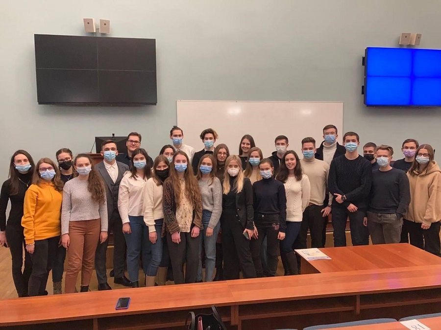
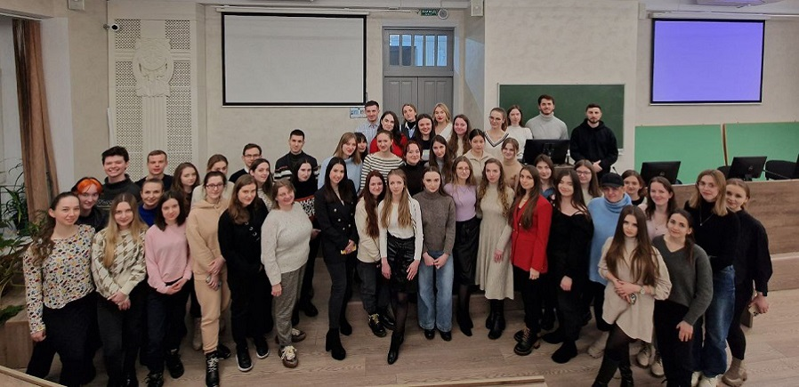

Студентське наукове товариство імені О.А. Киселя НМУ імені О.О. Богомольця — це твоя перша сходинка у величний світ доказової науки. Понад 140 років виховуємо провідних вчених, хірургів, діагностів та лідерів сучасної медицини.

СНТ — це не просто формальне об'єднання, а потужний дослідницький інкубатор, який надає студенту доступ до провідних клінічних баз, лабораторій та світової наукової спільноти.
Участь у клінічних обходах, розбір унікальних пацієнтів, робота в операційних та дослідницьких лабораторіях НДІ експериментальної медицини НМУ.
Публікуйте тези та повнотекстові статті в «Українському науково-медичному молодіжному журналі» (категорія Б), індексованому в міжнародних наукометричних базах.
Флагманська конференція AYMSConf, телемости із закордонними медичними центрами, лекції всесвітньо відомих хірургів і вчених.
Навички публічних виступів, наукового дизайну, статистичного аналізу даних у R/SPSS та впевненого захисту робіт перед вченою радою.
Студентський науковий гурток (СНГ) — основна структурна одиниця наукової роботи на кафедрі. Ваш курс та факультет не обмежують можливість відвідувати будь-який гурток університету.
Від студентської ініціативи Олександра Киселя в Університеті Святого Володимира до найпотужнішого медичного наукового товариства країни.

26 жовтня 1881 року на медичному факультеті Імператорського Університету Святого Володимира у Києві виникло «Клінічне товариство студентів-медиків». Його першим Головою Ради став студент Олександр Кисіль — згодом видатний професор, основоположник дитячої ревматології та інфекційної педіатрії.
У 1970 році Товариству було офіційно присвоєно ім'я його легендарного засновника. Сьогодні СНТ імені Киселя продовжує цю понад 140-річну естафету знань, об'єднуючи нові покоління медичних першопрохідців.
26 жовтня студенти-медики на чолі з Олександром Киселем засновують «Клінічне товариство студентів-медиків» у Києві.
Організація змінює назву на «Клінічне товариство студентів медиків і медичок міста Києва», відкриваючи нову епоху рівності в медицині.
Перейменування та інтеграція в структуру реорганізованого Київського медичного інституту.
Проведення першої масштабної офіційної студентської наукової конференції інституту.
Рішенням вченої ради Товариству офіційно присвоєно ім'я його засновника, професора Олександра Киселя.
СНТ виступає співзасновником «Українського науково-медичного молодіжного журналу» — фахового видання ВАК України.
65+ наукових гуртків, понад 3 500 активних учасників, щорічні міжнародні симпозіуми AYMSConf та інтеграція штучного інтелекту в медичний пошук.
Щороку СНТ імені Киселя організовує понад 10 галузевих та міжгалузевих міжнародних конференцій, шкіл майстерності та всеукраїнських олімпіад.
Щорічна міжнародна науково-практична конференція молодих вчених та студентів. Секції з хірургії, внутрішньої медицини, педіатрії, фундаментальних дисциплін та військової медицини.
Серія відкритих інтерактивних зустрічей із провідними хірургами, онкологами та фармакологами. Відверті розбори клінічних помилок та кар'єрні траєкторії.
Інтенсивні тренінги з методології медичних досліджень, доказової медицини, біостатистики та академічної доброчесності.
Клінічні брейн-ринги між університетами, змагання з розв'язання невідкладних медичних кейсів та застосування ШІ в діагностиці.
Заснований у 1993 році Студентським науковим товариством імені О.А. Киселя та НМУ. Це фахове наукове періодичне видання України, де студенти та молоді науковці публікують результати власних оригінальних досліджень.
Спеціальний випуск за матеріалами щорічної конференції студентів та молодих вчених AYMSConf.
Виникли запитання щодо приєднання до СНТ, реєстрації гуртка або участі у конференції? Звертайтеся безпосередньо до керівництва або долучайтеся до наших спільнот.